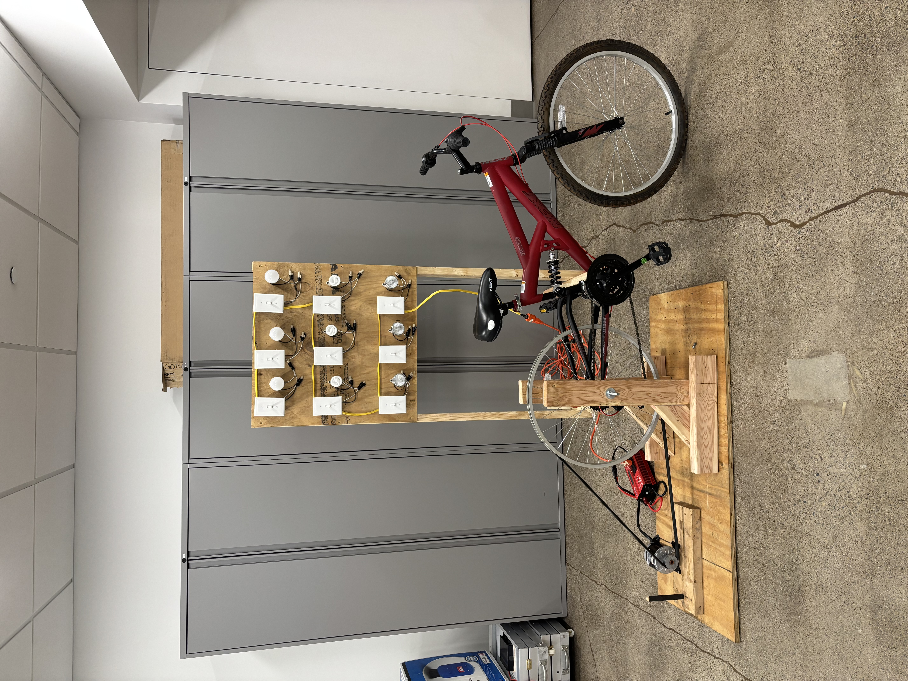
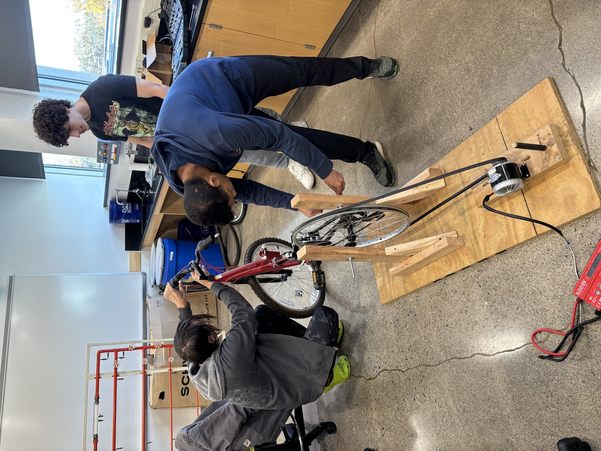

A human-powered electrical generation system built to demonstrate real-world power output and energy efficiency concepts at Penn State Hazleton admissions events.
The Engineering Club designed and built a human-powered bike generator that converts pedaling into electrical energy to power different types of light bulbs - LED, fluorescent, and halogen. This interactive demo was used for Penn State Hazleton admissions events to demonstrate energy efficiency and power generation concepts through hands-on learning. Participants could directly feel the difference in effort required to power each bulb type, making energy efficiency tangible and memorable.
As President of the Science and Engineering Club, I led the planning, coordination, and execution of the project build. I supported component selection, wiring, and testing, and helped guide the student team throughout the process. I presented the project at campus open house events as part of a hands-on STEM demonstration aimed at introducing students to engineering and energy concepts.

